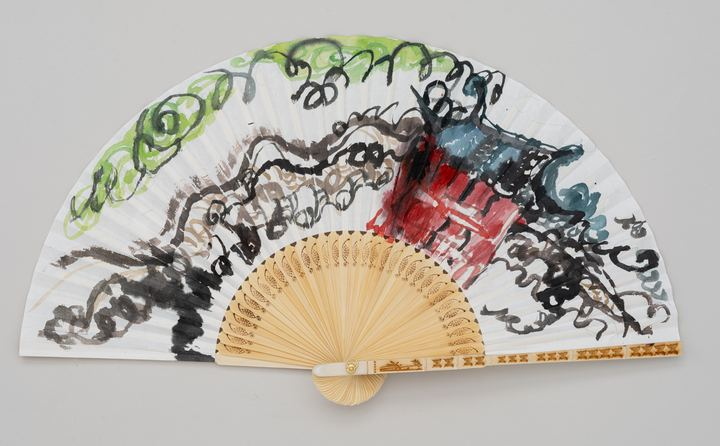

Beyond the Red Gate: Infinite Curves of Dreams빨간 대문 너머: 무한한 꿈의 곡선

On the right of a white Hanji fan stands a red gate. Crowned with blue roof tiles, it keeps its dignity even amid unrestrained brushwork, while to its left a wall of ink and earthen brown winds on and on. Along the upper edge of the fan, pale green trees grow round and thick, and black ink lines twist like vines, circling across the whole picture. With brushstrokes pushed through in a single breath of ink and color, I held together the stillness of an old house and its living energy. While wandering through a traditional hanok, my eyes caught on a red gate. What reached me first was its dignity. The red came to me fresh, full of excitement and life, and the old grain of the wood offered a quiet calm. If I opened that gate, what world would unfold? Imagination bloomed on its own before it. There are old words: knock, and it shall be opened to you. Beyond the gate, there may be nothing but an ordinary courtyard. That is all right. The excitement that bloomed before the gate has already opened another world.
하얀 한지 부채 오른쪽에 빨간 대문 하나가 서 있다. 푸른 기와를 얹은 대문은 거침없는 붓질 속에서도 위엄을 잃지 않고, 그 왼쪽으로는 먹빛과 흙빛의 담장이 구불구불 길게 이어진다. 부채의 위쪽 가장자리를 따라서는 연둣빛 나무들이 둥글게 우거지고, 검은 먹선들이 덩굴처럼 감기며 화면 곳곳을 맴돈다. 먹과 채색을 단숨에 밀어붙인 붓질로, 오래된 집의 고요와 살아 있는 기운을 함께 담았다. 어느 한옥을 구경하다가 빨간 대문 하나가 눈에 들어왔다. 가장 먼저 다가온 것은 그 대문의 위엄이었다. 붉은빛은 설렘과 생동감으로 신선하게 다가왔고, 오래된 나뭇결은 고즈넉함을 건넸다. 저 문을 열면 어떤 세상이 펼쳐질까. 상상은 그 앞에서 저절로 피어났다. 두드리라, 그리하면 열릴 것이라는 오래된 말씀이 있다. 문 너머에는 어쩌면 평범한 마당 하나가 있을지도 모른다. 그래도 괜찮다. 문 앞에서 피어난 그 설렘이 이미 또 하나의 세상을 열어 주었으니까.